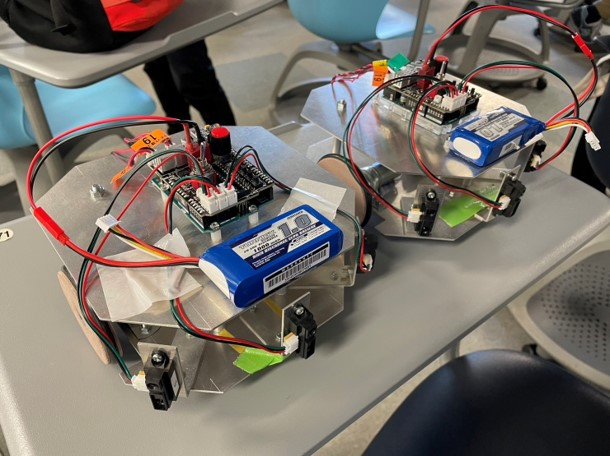

言語
Python、C / C++、SQL、HTML / CSS、MATLAB
Python、C / C++、SQL、HTML / CSS、MATLAB
PyTorch、scikit-learn、pandas、NumPy、Matplotlib、seaborn
Streamlit、MySQL、IMAP、Gemini API
Linux、Docker、ROS、Arduino
受信メールを顧客情報としてまとめ、検索や振り返りをしやすくするStreamlitアプリです。メール取得・要約・データ管理・一覧表示をつなぎ、日々のメールを扱いやすい形に整理します。
公開中の実行デモはありません。READMEの手順でローカル起動できます。
システム構成
IMAP UIDはUIDVALIDITYと組み合わせ、メールボックス・フォルダーも含めた一意制約をMySQLに設定。再取得やサーバー側のUID更新があっても、同じメールを重ねて登録しにくい構成です。
同一メールボックスの取込をMySQLロックで直列化し、1回の保存をトランザクションで確定。途中で失敗した場合はロールバックし、一意制約でも重複を抑えます。
Gemini APIは任意機能とし、未設定・応答失敗時はローカルの抽出要約へ切り替えます。APIキーなどの設定は環境変数またはStreamlit Secretsから読み込みます。
メールボックス、顧客区分、受信期間、キーワードで絞り込み、本文・要約の確認やタグ編集ができます。CSVはUTF-8 BOM付きで、数式として解釈される値も無害化します。
電子教材の操作ログを学生・週単位に集計し、通常と異なる行動や似た行動タイプを確認するStreamlitアプリです。公開版には架空の学生・授業・操作履歴だけを使用しています。
分析の流れ

学生・週を1レコードとし、操作数・活動時間・閲覧ページ数・戻る操作率・書き込み率などを集計。選択したコース・週の範囲で分析条件を変更できます。
Isolation Forestの結果を相対的な要確認順位として表示。スコアは異常の確率でも、成績・不正・診断の判定でもありません。詳細画面で操作内訳と時系列ログを確認できます。
公開デモと学部研究は別のものです。 この公開アプリは集計特徴量とIsolation Forestを使う合成データのデモで、Transformer Encoderは実装されていません。合成データでの結果を実データ上の研究成果として扱っていません。
深度カメラの情報を使って障害物を避け、既知のコース上で充電器へのドッキング動作につなげるロボット制作です。Linux上でROSとPythonを使い、移動指令を制御しました。

Arduinoと赤外線距離センサーで壁との距離を読み、コースを走行するロボットカーです。センサーの応答が追いつかず衝突する課題に対し、速度や曲がる条件を調整しました。
音声または手の形から「グー・チョキ・パー」を判定し、ロボットとの勝敗に応じた動作につなげる作品です。入力の認識とChoregraphe / NAOqi側の制御を組み合わせました。
音声認識
映像認識
コマンドプロンプト上で動くテトリスを制作し、Windows版をもとにLinuxターミナルでも動くように調整しました。配列による盤面・ブロック管理と、環境に合わせたキー入力を扱っています。
中部大学大学院 工学研究科 ロボット理工学専攻2028年3月 修了見込み
学部研究
操作ログから学習行動の特徴を捉え、Transformer Encoderによる文脈的な特徴表現とIsolation Forestによる教師なし異常検知を扱いました。成果は国際会議 EDM 2026 の Poster/Demo と CLE49 で発表しました。
EDM 2026 Poster/Demo 論文 CLE49 発表ページ（情報処理学会）
学部研究・発表済み修士研究（進行中）
Knowledge Graphで概念間の関係を活用した学習支援チャットボットの研究に取り組んでいます。
研究進行中